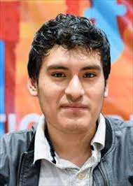

- Kevin Joel Cori Quispe
- Presenta un caracter amigable, servicial, atento y solidario con las personas
Contacto
Idioma
- Español: Nativo
- Ingles : Intermedio
Aptitudes
- Capacidad de aprendisaje y adaptación
- Trabajo en equipo
- Dilatada experiencia en programación
Datos Generales
- Fecha de nacimiento: 08/02/1999
- Cédula: 74298688
- Nacionalidad: Mexicano
- Estado Civil: Soltero
Formación
- Secundaria: I.E.P Saco Oliveros (2010 - 2015)
- Universidad: Ingenieria en Tecnologicas Computacionales, Tecnologico de Monterrey (Presente)
Experiencia Laboral
- Voluntariado : Enseñanza en programación (2020-2021)